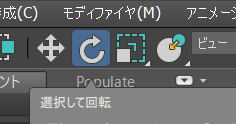
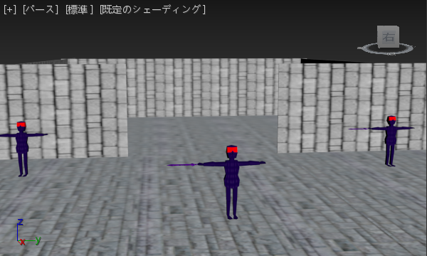
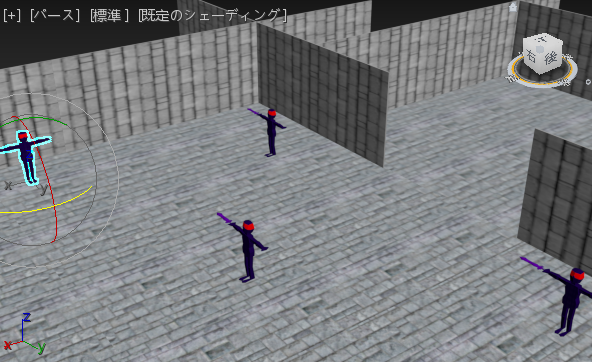
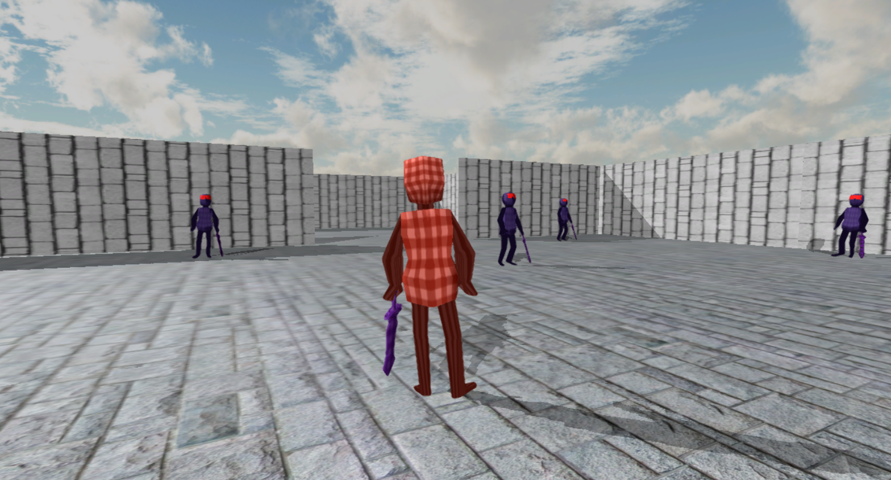
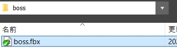
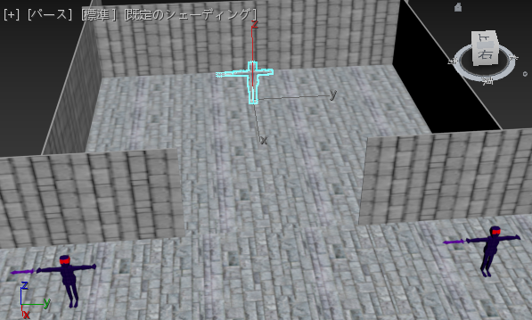
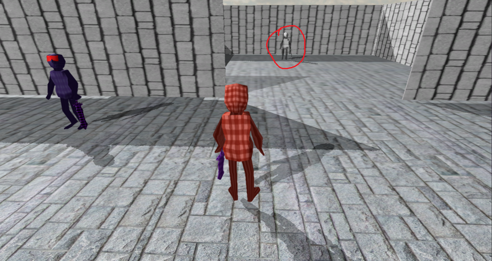

Action_00 オブジェクトの配置＿前編(レベル)
-
1.1 セットアップ
Practiceでは、簡単なアクションゲームを制作しました。
今回は、もっとゲームらしいアクションゲームを作っていこうと思います。
今回作るゲームの完成品は、こちらになります。
ゲームの大まかな流れとしては、プレイヤーを操作して敵を全て倒したらゲームクリアという感じです。
ステージには、レバーやドアなどのギミックが配置されています。
早速、プログラミングをしていきたい所ではありますが、まずエンジンのセットアップをする必要があります。
既にゲーム制作をしている学生は、既にセットアップを完了していると思います。
そうでない学生は、こちら
の②だけを実行してください。
デスクトップにtkExporter for 3dsMaxのショーットカットが作成されていることを確認してください。
このtkExporterを使用して、3ds Maxの配置データを出力します。
それでは、game.slnからVisual Studioのプロジェクトを立ち上げてください。立ち上げたら、F5でゲームを起動してみてください。
すると、このようなタイトル画面が表示されたと思います。

そして、ゲームパッドのAボタンを押すと、このような画面になると思います。

ゲームパッドの左スティックで移動、右スティックでカメラの回転、それぞれA、X、Yボタンでプレイヤーが何らかの行動をすることを確認してください。
-
1.2 レベルとは
早速オブジェクトの配置をしていきたい所ですが、その前にレベルについて説明します。
「レベル」とは、「STAGE」や「WAVE」、「SECTION」などの1つの「面」のことを言います。
具体例を挙げますと、スーパーマリオブラザーズの「ワールド1-1」などです。
さらに、キャラクターが動き回る「フィールド」や、キャラクターや敵の「配置」をするなど、レベルを作り上げる作業のことを、
「レベルデザイン」と言います。
日本ではあまり馴染みがありませんが、海外では、この「レベルデザイン」をする専門の職業である、「レベルデザイナー」という業種が存在します。
レベルデザインの「レベル」って何だ？──ボックス、メイズ、パーセクにマウンテン!? ゲームの「面」の呼びかたいろいろ
やる夫と学ぶ ゲームが変えた日本語
-
1.3 EnemyとBossの配置
では、早速3DSMAXを使用して、エネミー、ボスを配置して行きましょう。
それでは、Assets/stage.maxを開いてください。
そうすると、以下のように背景とhuman(プレイヤー)が配置されていると思います。

先ほどのプレイヤーと背景の配置は、このmaxデータを参照して配置しています。Game.hとGame.cppを見てみましょう。
Game.h
//////////////////////////////////////
// メンバ変数。
//////////////////////////////////////
private:
LevelRender m_levelRender; //レベル。
Player* m_player = nullptr; //プレイヤー。
Game.cpp
//レベルを構築する。
m_levelRender.Init("Assets/level3D/level.tkl",
[&](LevelObjectData& objData)
{
//名前がhumanだったら。
if(objData.EqualObjectName(L"human") == true)
{
//プレイヤーのオブジェクトを作成する。
m_player = NewGO<Player>(0,"player");
//座標を設定する。
m_player->SetPosition(objData.position);
//回転を設定する。
m_player->SetRotation(objData.rotation);
//trueにすると、レベルの方でモデルが読み込まれます。
return true;
}
//名前がbackgroundだったら。
else if(objData.EqualObjectName(L"background") == true)
{
//背景オブジェクトを作成する。
m_background = NewGO<BackGround>(0, "background");
//座標を設定する。
m_background->SetPosition(objData.position);
//大きさを設定する。
m_background->SetScale(objData.scale);
//回転を設定する。
m_background->SetRotation(objData.rotation);
return true;
}
return true;
});
Game.hで「LevelRender」というクラスの変数を宣言して、
Game.cppで先ほどのmaxの配置データを読み込んで、オブジェクトを配置しています。
それでは実際に、maxでオブジェクトを配置してみましょう。
では3dsmaxに戻って、右側の「ユーティリティ」から「MAXScript」→「スクリプトを起動」から、
デスクトップの「tkExporterのショートカット」を選択してください。

そうすると、「ユーティリティ」に下記のような項目が追加されたと思います。
では、始めに「Enemy」を配置してみましょう。
先ほどの「tkExporter」の項目から、「Level」の「Load Object」からAssets/modelData/enemyのenemy.fbxを選択してください。
そうすると、このように「Enemy」が読み込まれたと思います。
では、「Enemy」をこの辺りの位置に移動させてみましょう。
出来ましたら、次は配置データを保存しましょう。
「Level」の「Save Level」より、Assets/level3Dのlevel.tklを選択して保存してください。

この操作により、「Enemy」の配置データが、「level.tkl」に保存されました。
tkExporterを使用すれば、3ds Maxの「座標」や「回転」、「拡大率」などのデータを出力できます。
次は、C++側でこの配置データを読み込んで見ましょう。
それではVisual Studioに戻って、Game.cppを開いてください。先ほど、配置データを読み込んでいるといった箇所に、
「Enemy」を配置するコードを追加してください。
Game.cpp
//レベルを構築する。
m_levelRender.Init("Assets/level3D/level.tkl",
[&](LevelObjectData& objData)
{
//名前がhumanだったら。
if(objData.EqualObjectName(L"human") == true)
{
//プレイヤーのオブジェクトを作成する。
m_player = NewGO<Player>(0,"player");
//座標を設定する。
m_player->SetPosition(objData.position);
//回転を設定する。
m_player->SetRotation(objData.rotation);
return true;
}
//名前がbackgroundだったら。
else if(objData.EqualObjectName(L"background") == true)
{
//背景オブジェクトを作成する。
m_background = NewGO<BackGround>(0, "background");
//座標を設定する。
m_background->SetPosition(objData.position);
//大きさを設定する。
m_background->SetScale(objData.scale);
//回転を設定する。
m_background->SetRotation(objData.rotation);
return true;
}
//名前がenemyだったら。
else if(objData.EqualObjectName(L"enemy") == true)
{
//エネミーのオブジェクトを作成する。
Enemy* enemy = NewGO<Enemy>(0, "enemy");
//座標を設定する。
enemy->SetPosition(objData.position);
//回転を設定する。
enemy->SetRotation(objData.rotation);
//HPを5に設定する。
enemy->SetHP(5);
//作成したエネミーの和を数えたいので、+1する。
m_numEnemy++;
return true;
}
return true;
});
できたらF5キーで実行してみてください。
下記のように「Enemy」が表示されていれば、成功です。
では次に、複数の「Enemy」と「Boss」を配置してみましょう。
3ds Maxに戻って、先ほど配置した「Enemy」を選択してください。
そうしたら、「Level」の「Copy Object」を選択してください。
そうすると、「Enemy」が2つに増えていると思います。
この機能を利用して、「Enemy」を複数配置してみましょう。

配置出来たら、先ほどと同じように「level.tkl」に保存してください。
保存出来たら、Visual Studioに戻って、F5で実行してみてください。
以下のように、「Enemy」が配置されているでしょうか？
ところで、先ほど配置したエネミーですが、皆同じ方向を向いていて不自然だと思いませんか？
3ds Maxで「Enemy」の方向を修正してみましょう。
では、3ds Maxの「回転ツール」を選択して、「Enemy」を回転させましょう。



出来たら、「level.tkl」に保存して、F5キーで実行してみましょう。
このように「Enemy」の方向が変わっていたらおkです。

では最後に、「Boss」を配置してみましょう。
3ds Maxに戻って、「Enemy」を読み込んだ時と同じように、Assets/modelData/boss/boss.fbxを読み込んで配置してください。


出来たら、「level.tkl」に保存しましょう。
次に、C++側に「Boss」を配置するコードを追加しましょう。
Game.cpp
//レベルを構築する。
m_levelRender.Init("Assets/level3D/level.tkl",
[&](LevelObjectData& objData)
{
//名前がhumanだったら。
if(objData.EqualObjectName(L"human") == true)
{
//プレイヤーのオブジェクトを作成する。
m_player = NewGO<Player>(0,"player");
//座標を設定する。
m_player->SetPosition(objData.position);
//回転を設定する。
m_player->SetRotation(objData.rotation);
return true;
}
//名前がbackgroundだったら。
else if(objData.EqualObjectName(L"background") == true)
{
//背景オブジェクトを作成する。
m_background = NewGO<BackGround>(0, "background");
//座標を設定する。
m_background->SetPosition(objData.position);
//大きさを設定する。
m_background->SetScale(objData.scale);
//回転を設定する。
m_background->SetRotation(objData.rotation);
return true;
}
//名前がenemyだったら。
else if(objData.EqualObjectName(L"enemy") == true)
{
//エネミーのオブジェクトを作成する。
Enemy* enemy = NewGO<Enemy>(0, "enemy");
//座標を設定する。
enemy->SetPosition(objData.position);
//回転を設定する。
enemy->SetRotation(objData.rotation);
//HPを5に設定する。
enemy->SetHP(5);
//作成したエネミーの和を数えたいので、+1する。
m_numEnemy++;
return true;
}
//名前がbossだったら。
else if(objData.EqualObjectName(L"boss") == true)
{
//ボスのオブジェクトを作成する。
Boss* boss = NewGO<Boss>(0, "boss");
//座標を設定する。
boss->SetPosition(objData.position);
//回転を設定する。
boss->SetRotation(objData.rotation);
//ボスのHPは高めに設定する。
//HPを15に設定する。
boss->SetHP(15);
//作成したエネミーの和を数えたいので、+1する。
m_numEnemy++;
return true;
}
return true;
});
F5キーで実行してみましょう。
このように、透明な敵が表示されているでしょうか。

以上でAction_00は終了です。
以上の作業が終わったら、「stage.max」ファイルを保存しておきましょう。
次は、「レバー」と「ドア」の配置をしていきます。
評価テストの回答をお願いします。